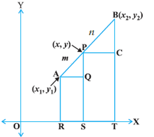
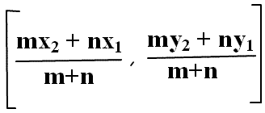

if we have given a line and we know the coordinate of the end points ( i.e. ( x1 , y1 ) and ( x2 ,
y2 ) ) , if that line is divided into two parts in the ratio of m : n at some point P as given in the figure so to finding the coordinate
of the point ( x , y ) we need a concept or formula that is known as section formula .

let us solve a question based on this concept -
Example 1 : Find the coordinate of the point which divides the line segment joining the point ( 4 , -3 ) and ( 8 , 5 ) in the ratio 3 : 1 internally .
Solution - using section formula we got the coordinate
x = ( 3.8 + 1.4 ) / ( 3 + 1 )
x = 7
y = ( 3.5 + 1.(-3) ) / ( 3 + 1 )
y = 3